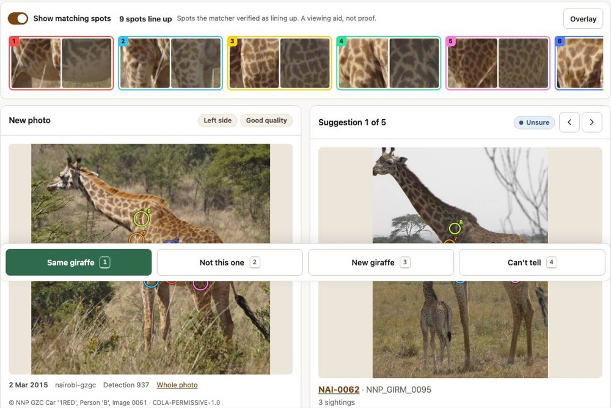

I didn't come up through computer science. I came up through systems thinking, and I taught myself to build what I see.
BLUFI built a supervised AI operating layer for a working service company: agents that read real records, write drafts, check their own work, and stop when they should. People keep prices, sends, payments and legal filings.
A field recording becomes a draft quote in about a minute
- Problem
- Estimators rebuilt every quote by hand after each property walk.
- Solution
- Record the walk once. An agent maps it to the service catalog, creates a draft, then checks its own work. A person prices and sends.
- System
- Recording → transcript watcher → agent (6 read tools, 1 draft tool) → 12 read-back checks → estimator
High confidence Source: [1] Production run log, 151 runs, 23 Sep – 4 Nov 2026; [2] live test battery record, 26 Oct
- Execution metrics, not an ROI study.
- The agent never prices or sends; that is by design.
Which giraffe is this?
- Problem
- Researchers match giraffes by eye across thousands of field photos.
- Solution
- Rank likely matches with calibrated confidence. A person confirms every new individual.
- System
- Detector vote → coat-pattern match → calibration → review queue → hash-chained log
Moderate confidence Source: [8] Pre-registered eval files on public datasets (GZGC Nairobi, CDLA-Permissive-1.0; Snapshot Serengeti). Not yet tested on partner animals.

- Measured on public datasets, not yet on the partner's own animals.
- Night infrared untested.
A company memory that knows where every fact came from
- Problem
- Expert pricing and field judgment lived in one person's head.
- Solution
- Atomic facts with source, confidence, effective dates and replacement history. Answers cite a fact or say “I don't have that.”
- System
- Recordings + documents → atomic facts → hybrid search, reranked → cite or abstain → nightly regression gate → health report
Moderate confidence Source: [4] Knowledge-base state report, 5 Nov 2026; [5] golden-set eval files, Sep–Oct 2026. Adoption evidence is weak.
- Adoption isn't proven: one recent week logged zero crew questions, and 6 of 7 sampled answers failed a quality check.
- Golden set came from the same transcripts, not real user questions.
Screens that check their own numbers
- Problem
- Raw satellite fire counts get misread as attacks.
- Solution
- Compare against a pre-war baseline, lead with caveats, and re-derive every number by script.
- System
- NASA FIRMS · Sentinel-1 · AIS → baseline → anomaly screen → verify.py → analyst
High confidence Source: [9] verify.py outputs against NASA FIRMS, Global Fishing Watch, Sentinel-1 public archives
The real pages, running live on public data. Pan, zoom, hover cells for numbers. Open full page ↗
- Concept demos, not operational products. A signal is a lead, never a conclusion.
Every stop briefed before the knock
- Problem
- Estimators walked up to doors without the call, the history or what was charged last time.
- Solution
- A private daily page per estimator, rebuilt automatically when the schedule moves.
- System
- Schedule watcher → call transcript + request + past work + past price + cited expert facts → signed-in page → usage tracking
High confidence Source: [3] Watcher event log, 4 Nov 2026 (single event; short production history)
Two maples thinned, worried about the roofline.
Called twice. Prefers text. Dog in back yard.
2024 · crown clean, 2 trees · $▇▇▇
Cited company fact F-1187
Utility locates: four views reconciled, never one field trusted
- Problem
- Digging without a valid locate ticket is a safety and legal risk, and the ticket field is often blank or stale.
- Solution
- Cross-check four independent records plus email before calling anything covered. A person submits every legal form.
- System
- Visits + job status + digging line items + tasks + email → covered / opening window / no date → staged form → human submit → ticket written to job, future visits, pinned note
High confidence Source: [7] Locate scan log, 5 Nov 2026 (one morning)
- Supports compliance work; doesn't guarantee it. A person is legally responsible and submits every form.
The agent can only do what its tools allow
- Problem
- An agent with general write access can do real damage.
- Solution
- Default-deny. Six read tools and one write: create a draft. No general mutation tool exists.
- System
- Custom MCP server · read clients, requests, quotes, jobs, visits, catalog · create_draft_quote · nothing else
High confidence Source: [6] MCP connector source and tool manifest
System map · 20 systems, labelled by what's actually true
- Walkthrough → draft quote agent
- Daily estimator briefings
- Structured phone intake
- Online request triage
- Multi-channel ops inbox
- Customer dossiers + grounded replies
- Visit confirmation + safe reschedule
- Utility-locate surveillance
- Locate form staging + recording
- Bounced-email recovery (narrow)
- Review analysis + crew credit
- Crew mobile app (51 tools)
- Field logistics app
- Ask-the-expert knowledge base
- Supervisor decision board
- Calculators and training pages
- Guarded self-improvement
- Office connector for a chat assistant
- Route-aware bid scheduling
- Next-gen logistics app
- Orchestrator live board
- 4 earlier tools, replaced
Built for a private company. Names, customers and prices stay private; structure and measured results are shown.
The model routes, code does the math
- Problem
- Language models make up numbers.
- Solution
- The model only picks the tool. Code computes every number and links it to its source rows.
- System
- Question → tool choice → code → source rows → named human release gate
High confidence Source: [10] 82-question eval and 255-question stress test files
Forecasts, logged and scored
- Problem
- Judgment that's never scored never improves.
- Solution
- Log every forecast with its base rate and dated updates, then score it.
- System
- Base rate → indicators and signposts → dated updates → Brier score
Moderate confidence Source: [11] Forecast casebook, 28 logged / 10 resolved. Small sample.
How I build trust
A person owns every decision that matters.
Each system has a written purpose, refusals and data limits.
Golden sets, held-out tests, pre-registered targets.
Nothing ships if it gets worse. Limits sit next to results.
During university I had a traumatic brain injury and had to relearn walking, talking, driving, even how to move my eyes together. I taught myself neuroscience to do it. That's where my problem-solving comes from: if something's broken, I figure out how the system works and rebuild it.
International Studies, Utah State · Global Peacebuilding certificate · Anticipatory Intelligence minor. CEO of a refugee NGO running a school for girls in Herat. Nearly two years in Botswana, Namibia and South Africa. Logan, Utah. US citizen.
Analytic standards: claims follow ODNI ICD 203. Facts are separated from assessments, uncertainty is stated, and each section carries a confidence level with its source. Confidence: High = direct system logs or eval files; Moderate = real data with small samples or known gaps.
Sourcing: numbered source descriptors in the style of ICD 206. Raw logs stay private; the descriptors say what kind of record each number came from.
Design: U.S. Web Design System color tokens and Public Sans. Built to Section 508 / WCAG 2.1 AA: text contrast, keyboard access, alt text.
Numbers come from my own logs and evaluation files. Demos marked “sample content” use invented examples; employer and partner data stays private.